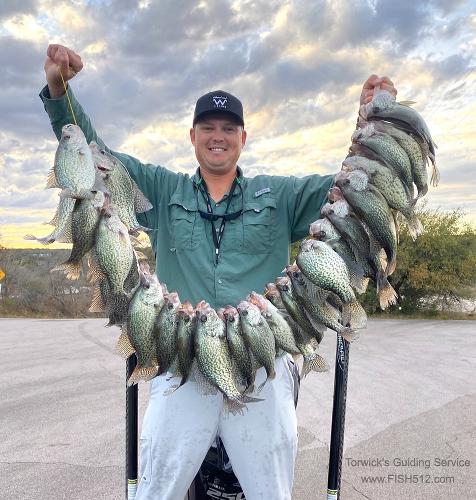
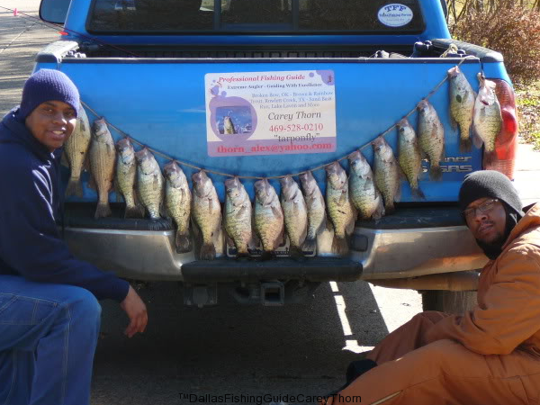
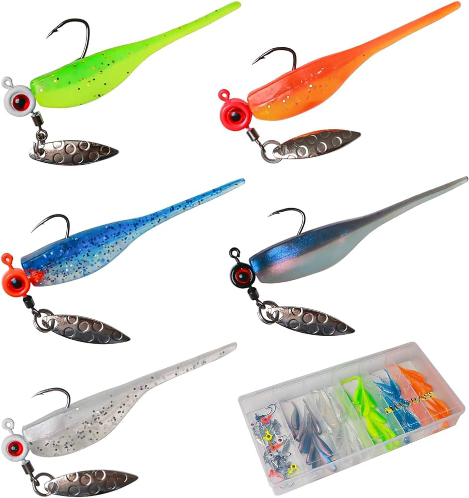
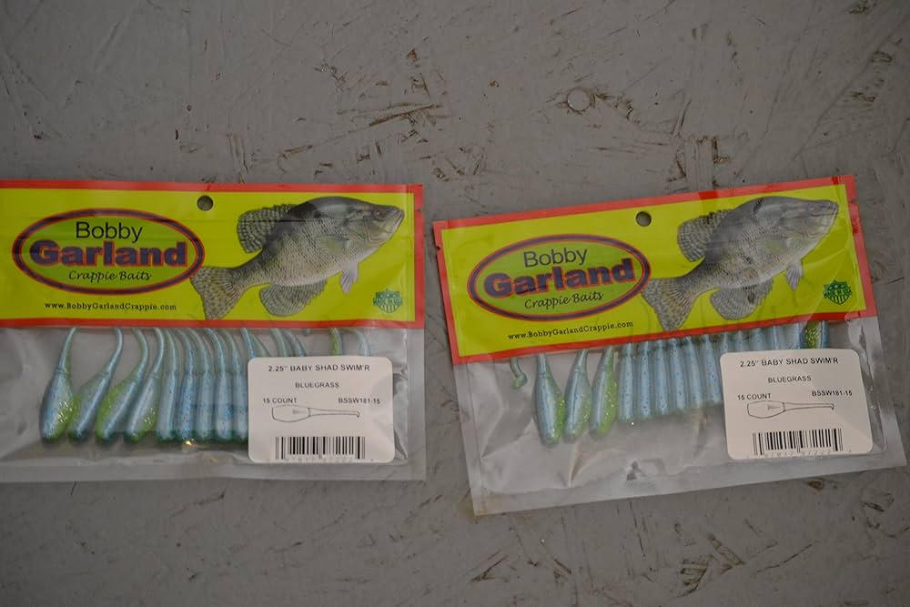
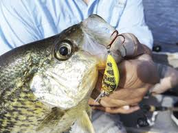
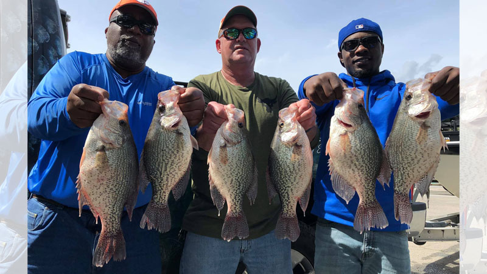
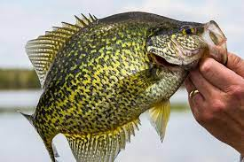
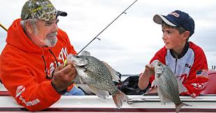

Crappie fishing
Crappie fishing is a beloved pastime celebrated for its simplicity and the delicious rewards it offers. Anglers often flock to lakes, rivers, and reservoirs in pursuit of these delectable panfish, known for their mild, flaky flesh. Crappies are often found in schools, and their willingness to bite makes them a popular catch among beginners and seasoned anglers alike. Whether you're casting jigs near submerged structures, using live bait under a bobber, or trolling in open water, crappie fishing allows for a variety of techniques. It's a wonderful way to spend a leisurely day on the water, whether solo or with friends and family, and it culminates in the satisfaction of a delicious meal featuring these delectable fish. Crappie fishing combines the joy of angling with the promise of a tasty reward, making it a cherished tradition for many fishing enthusiasts.
|  |  |
|  |  |
|  |  |
|  |  |
Crappie lures come in a captivating array of shapes, sizes, and colors, each designed to entice these voracious panfish. Among the most popular are small jigs adorned with soft plastic bodies, often resembling tiny baitfish or insects. These jigs are versatile and can be cast, trolled, or vertically jigged to mimic the erratic movements that crappies find irresistible. Additionally, crappie enthusiasts frequently use small crankbaits, spinners, and even live bait like minnows or worms under a bobber to tempt these fish. The selection of the right lure depends on various factors, including water conditions, depth, and the preferences of the crappie on any given day. With countless options to choose from, experimenting with different lures becomes an enjoyable part of crappie fishing, offering a chance to unlock the secrets of a successful day on the water.